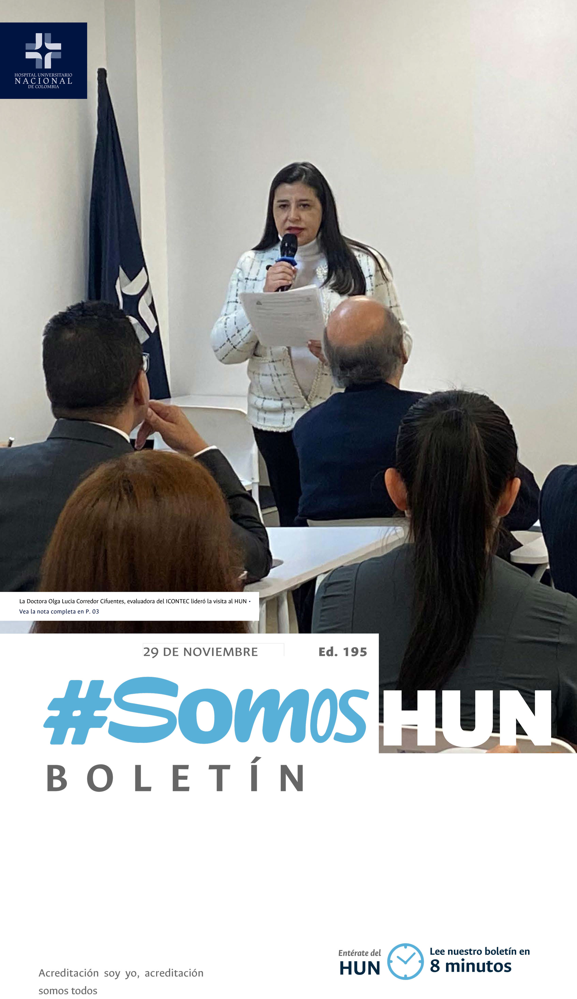
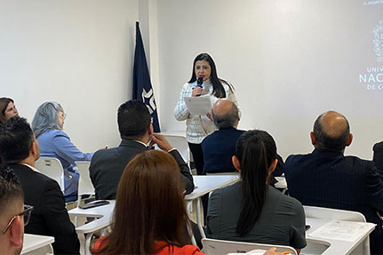
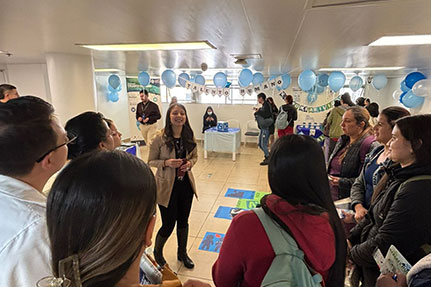
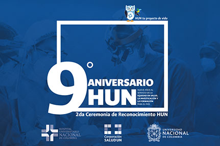

Ver todos los boletines
de evaluación de estándares de Acreditación
por partedel ICONTEC
Desde el 19 al 22 de noviembre recibimos la visita de
evaluación de los estándares de Acreditación, como
parte del proceso que lleva el HUN hacia el logro del
objetivo estratégico Hospital Acreditado.Leer más

Feria de la Acreditación
En esta tercera versión de la
Feria de Acreditación los
participantes pasaron a través
de 12 stand que concentraban
la información más útil para afianzar
los conocimientos previos a la visita
de evaluación y de manera lúdica
confrontaban sus conocimientos. En
promedio 530 personas pasaron por cada
uno de los stands, pero solo 426 personas
terminaron el recorrido y depositaron el
tiquete en la urna.Leer más
CAMINO HACIA EL OBJETIVO
HOSPITAL UNIVERSITARIO
El Hospital Universitario Nacional de Colombia
se postula a certificación de favorabilidad como
escenario de prácticas formativas, donde nos
evalúan las condiciones de calidad del escenario
en los que los estudiantes desarrollan las
prácticas de los programas académicos en salud.Leer más

9 años
al servicio del país
Nueve años representan
casi una década de servicio,
durante los cuales el HUN ha
atendido a miles de pacientes
y ha contribuido al propósito de servir
a un país como legado de la UNAL y al
bienestar general de la población.Leer más
Estándar Clínico Basado en la Evidencia
uso de anticoagulantes en
el paciente adulto atendido
en el Hospital Universitario
Nacional de Colombia
La anticoagulación es una terapia fundamental
para la prevención y el tratamiento de la enfermedad tromboembólica, es usada en enfermedades
frecuentes como las arritmias cardiacas y en escenarios donde se aumenta el riesgo de trombosis
como los pacientes de mayor edad y los pacientes
hospitalizados.Leer más